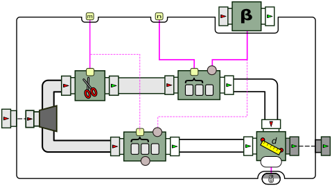
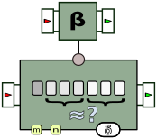
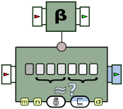

- java.lang.Object
-
- ca.uqac.lif.cep.Processor
-
- ca.uqac.lif.cep.GroupProcessor
-
- ca.uqac.lif.cep.peg.SelfCorrelatedTrendDistance<P,Q,R>
-
- Type Parameters:
P- The type of the patternQ- The type returned by the beta processorR- The type returned by the distance function
- All Implemented Interfaces:
- ca.uqac.lif.cep.Contextualizable, ca.uqac.lif.cep.Duplicable, ca.uqac.lif.cep.DuplicableProcessor
public class SelfCorrelatedTrendDistance<P,Q,R> extends ca.uqac.lif.cep.GroupProcessorCompares a trend calculated on a window events to another trend computed on another window placed further away in the past. Graphically, this generic pattern can be represented as follows:
The processor can also be seen as a "black box" taking four parameters, and in this case is represented as follows:

The parameters are:
Parameter Description n The width of each window ("past" and "present") m The amount of offset between the "past" and the "present" window The processor used to compute the trend on both windows The metric used to compute the distance between the two trends Optionally, the pattern can be instantiated with two more parameters: a comparison function and a threshold metric. The pattern is extended to become the following:

Represented as a single box, this becomes:

The additional parameters are:
Parameter Description d A distance threshold A function that compares the distance between trends to d, and determines if the distance "exceeds" the threshold Let us explain this workflow. Boxes #1–3 and #5–6 in the previous diagram are similar to the static
TrendDistancepattern. The difference lies upstream, in how the “current” and the “reference” trends are extracted from the input event sequence. That sequence is first split into two copies (box #9). The topmost copy is trimmed of its first m events, as sis represented by box #7. This makes such that the streams entering boxes #1 and #4 are offset by m: while box #4 receives the stream of events e₀ , e₁, …, box #1 receives the stream em, em+1, … These two boxes then apply the same computation β on a sliding window: box #1 on a window of width n, and box #4 on a window of width m. The output of β on these two windows is then sent to the distance metric (box #3), and the rest of the process unfolds similarly to the static trend distance workflow we have introduced earlier.As before, the distance metric (box #3) is fed with a sequence of pairs of trends (p, t), where t ∈ T is the trend computed on the latest window of n events. The reference trend p ∈ P, however, is now also computed from a window of events of the same stream. Let k be the number of events received from the input stream so far, with k ≥ m + n. Due to the presence of the trimming box (#7), it can be observed that, when box #1 applies β on a window of the last n events ({ek−(n−1), ek−(n−2), …, ek}) box #4 applies β on a window of the m preceding events ({ek−n−(m−1), ek−n−(m−2), …, ek−ns}). In other words, the distance metric compares the trend computed from the last n events to a reference computed from the m events before them. The rest works in a similar way to the static trend distance workflow.
The first variant is simply missing the boxes #5 and #6; rather than comparing the distance to a threshold, it outputs the distance directly.
-
-
Constructor Summary
Constructors Constructor and Description SelfCorrelatedTrendDistance(int m, int n, ca.uqac.lif.cep.Processor beta, ca.uqac.lif.cep.functions.Function delta)SelfCorrelatedTrendDistance(int m, int n, ca.uqac.lif.cep.Processor beta, ca.uqac.lif.cep.functions.Function delta, R d, ca.uqac.lif.cep.functions.BinaryFunction<R,R,java.lang.Boolean> comp)
-
Method Summary
All Methods Instance Methods Concrete Methods Modifier and Type Method and Description protected voidbuild(int m, int n, ca.uqac.lif.cep.Processor beta, ca.uqac.lif.cep.functions.Function delta, R d, ca.uqac.lif.cep.functions.BinaryFunction<R,R,java.lang.Boolean> comp)-
Methods inherited from class ca.uqac.lif.cep.GroupProcessor
addProcessor, addProcessors, associateEndpoints, associateInput, associateOutput, cloneInto, copyProcessor, duplicate, getAssociatedInput, getPullableInput, getPullableOutput, getPushableInput, getPushableOutput, notifySources, reset, setContext, setContext, setPullableInput, setPullableInputAssociation, setPullableOutput, setPushableInput, setPushableOutput, setPushableOutputAssociation, start, stop
-
Methods inherited from class ca.uqac.lif.cep.Processor
allNull, associateTo, associateToInput, associateToOutput, duplicate, duplicateInto, equals, getContext, getContext, getEmptyQueue, getEventTracker, getId, getInputArity, getInputType, getInputTypesFor, getOutputArity, getOutputType, getPullableOutput, getPushableInput, hashCode, newContext, onEndOfTrace, setEventTracker, startAll, stopAll
-
-
-
-
Constructor Detail
-
SelfCorrelatedTrendDistance
public SelfCorrelatedTrendDistance(int m, int n, ca.uqac.lif.cep.Processor beta, ca.uqac.lif.cep.functions.Function delta, R d, ca.uqac.lif.cep.functions.BinaryFunction<R,R,java.lang.Boolean> comp)
-
SelfCorrelatedTrendDistance
public SelfCorrelatedTrendDistance(int m, int n, ca.uqac.lif.cep.Processor beta, ca.uqac.lif.cep.functions.Function delta)
-
-